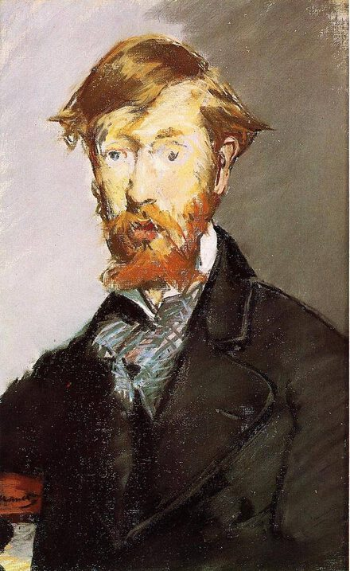

Edouard Manet,1832 - 1883,"Realism,Impressionism",French,"Édouard Manet (US: ; UK: ; French: [edwaʁ manɛ]; 23 January 1832 – 30 April 1883) was a French modernist painter. He was one of the first 19th-century artists to paint modern life, and a pivotal figure in the transition from Realism to Impressionism.",http://en.wikipedia.org/wiki/Édouard_Manet,90
